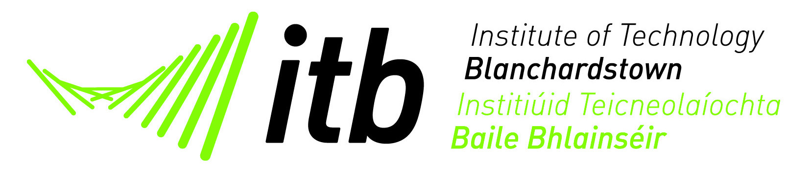

Home
About Us
History
ITB
Local Area
Ecology & Biodiversity
Gallery
Contact Us
Sitemap
Get in touch
If you would like to get into further contact with ITB, just email or give us a call.
Click on any of the icons below to view our social media pages.
Email Us:
info@itb.ie
Tel: +353 (1) 8851000
Link To The Real ITB Website